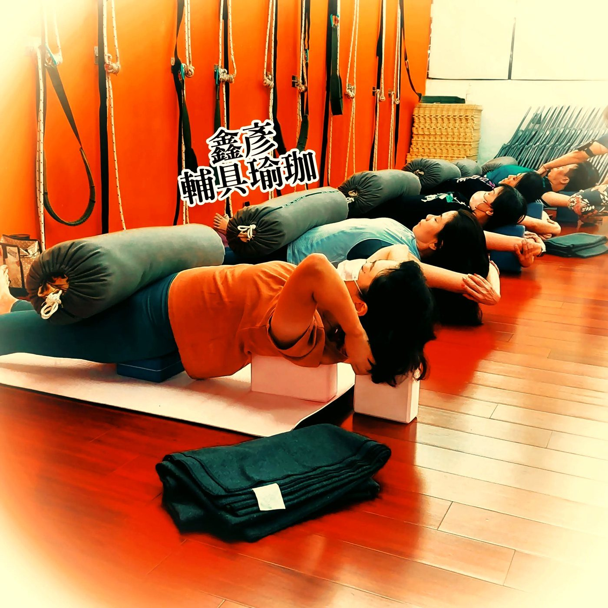

呼吸與肩頸緊繃：為什麼光叫自己放鬆，肩膀還是放不下來？

- 肩頸緊繃往往不只是肩頸局部問題，呼吸時過度依賴抬肩、抬胸輔助肌也是常見的連動模式。
- 「呼吸對了肩膀自己會鬆」是過度簡化的說法；肩頸張力受日常負重、姿勢支撐、壓力與肌力多重影響。
- 練習橫膈膜呼吸不是把肚子死命頂出去，而是建立省力、立體的胸腹配合，減少日常不必要的聳肩代償。
- AI 體態檢測為靜態外觀角度觀察，無法測量動態呼吸或神經張力；若伴隨手麻、放射痛應尋求醫療診斷。
你可能也有過這種經驗：工作或走路時，一發現自己又在聳肩，立刻提醒自己「肩膀放鬆、往下沉」。但往往不到三秒鐘，肩膀又悄悄縮了回去。其實很多時候，光用意志力叫肩膀放鬆很難持久，因為在你的每一次呼吸中，肩頸周邊的肌肉可能正被迫頻繁幫忙。
越叫自己「不要聳肩」，為什麼反而越僵硬？
當我們刻意用力把肩膀往下壓時，往往只是用了另一組肌肉去「對抗」，反而製造新的僵硬。在解剖學上，安靜呼吸的主要動力應來自橫膈膜。但當我們長時間前傾盯著螢幕、處於精神緊繃狀態時，呼吸模式容易偏向淺快的上胸式呼吸。
這時，位於頸部與肩背上方的「呼吸輔助肌」——如上斜方肌、提肩胛肌與斜角肌——就必須頻繁收縮，協助提拉肋骨以增加胸腔進氣量。試想日常安靜呼吸每分鐘約 12～16 次，如果每次吸氣都動用到肩頸輔助肌，這些肌肉自然很難真正得到休息。
但我們不能誇大宣稱「肩頸緊繃唯一的源頭就是呼吸」；長期手懸空打字、頭部力學前移、後背深層肌力不足或生活壓力，都是常見且相互交織的因素。
橫膈膜與肩頸輔助肌的真實關係：回歸省力分工
橫膈膜像是一片厚實的穹頂，吸氣時收縮下沉，帶動胸廓在前後、左右與垂直方向做立體的三維擴張，使空氣順暢進入肺底；吐氣時放鬆回彈。這種由橫膈膜主導的呼吸十分省力，頸肩幾乎不需主動上提。
練習橫膈膜呼吸的核心，不是把肚子像氣球一樣死命往外推，更不是「胸部完全不準動」。正常的呼吸是胸腹協調的流暢微幅起伏。我們的目標是讓呼吸工作重新由橫膈膜主導，讓肩頸的呼吸輔助肌回到它們原本的「應急備用」角色，不再每分每秒都承擔主要負擔。
壁繩瑜伽如何輔助重新感受省力呼吸？
如果直接坐著或站著練習，由於重力持續對抗與肌肉慣性，很多人即使想放鬆，肩膀依舊會不自覺聳起。壁繩瑜伽能發揮很好的輔具作用：繩帶能穩固承托住軀幹或骨盆的重量，減少脊椎與肩關節的抗重力負荷。在被穩穩支撐的狀態下，學員有餘裕在無壓力的狀態下伸展上背、舒展胸廓，使橫膈膜下沉的空間更加充足，比一般徒手練習更容易體察到呼吸時腹部的自然起伏。如果你想了解壁繩的實際上課方式，可以先閱讀壁繩到底是什麼、第一次上課會做什麼。

躺著就能嘗試的小練習：仰臥屈膝手放腹部
平躺在床上或墊上，雙膝彎曲、腳掌平踩於地，讓下背自然平貼，頸部保持中立放鬆。
- 將一隻手輕輕放在胸口中央，另一隻手放在肚臍周圍。
- 用鼻子緩慢、自然地吸氣，想像氣流溫和引導至肺底——目標是感受放在肚子上的手微微被托起，胸口的手只有輕微、平順的浮動。
- 吐氣時自然放鬆，讓腹部自然下沉，肩膀始終放鬆平貼床面，不主動參與。
- 以吸氣 4 秒、吐氣 6 秒的節奏，溫和重複 5～10 次即可。
誠實提醒：練習呼吸不是做一次肩膀就自動徹底鬆開的神奇魔法，它是神經肌肉控制的重新學習。剛開始如果覺得肚子起伏不明顯、或肩膀仍想用力，都是極為正常的適應過程，放慢步調即可。
服務定位與醫療警訊界線
很多學員會好奇「體態檢測能不能測出我是不是用肩膀在呼吸？」。答案是：不能。AI 體態檢測是靜態影像的角度測量（如頭部前傾角、肩線水平），無法評估動態呼吸型態或肌肉即時出力狀態。檢測適合作為日常站姿習慣的客觀對照，但動態呼吸與動作代償需在課堂中由老師當面指導與觀察。
另外，若你的肩頸緊繃伴隨以下狀況，請優先尋求骨科、復健科或神經科醫師診斷，不可僅依靠呼吸練習：
- 手臂或手指出現麻木、刺痛、像觸電般的放射感。
- 手部握力減退、拿東西容易無力掉落。
- 頸部劇烈銳痛、活動範圍嚴重受限或伴隨發燒。
想了解肩線與頭部前傾的站姿角度？
首次到店 NT$299，老師協助拍攝、查看姿勢角度並當面解讀。此服務為靜態影像參考，無法測量呼吸動態或即時肌肉用力狀況；查看完整檢測說明。
預約首次 NT$299 AI 體態檢測若肩頸緊繃伴隨手麻、刺痛、無力或關節劇烈疼痛，先尋求醫療專業協助。文章提供解剖概念與放鬆練習，不能替你診斷或提供個人治療計畫。
常見問題
呼吸方式真的會影響肩頸緊繃嗎？
會相互影響。當習慣淺快的上胸式呼吸時，負責提拉胸廓的上斜方肌與提肩胛肌會頻繁代償出力，增加肩頸的疲勞感；但肩頸緊繃通常還伴隨姿勢負重與壓力等多重因素。
只要練好腹式呼吸，肩頸僵硬就會完全自己改善嗎？
不會自動完全解決。「呼吸對了肩膀自己會鬆」是過度簡化的說法。肩頸緊繃還受桌面高度、長期低頭、背部肌力支撐等多重條件影響，呼吸練習是減輕代償的其中一環，需整體配合。
練習腹式呼吸時，需要用力把肚子挺到最大嗎？
不需要。過度用力推擠肚子反而會造成腹壁緊張與代償。橫膈膜呼吸講求的是自然、深長且省力的 360 度胸腹微幅起伏，動作以放鬆舒適為原則。
AI 體態檢測能測出我是不是用肩膀在呼吸嗎？
不能。AI 體態檢測是靜態站姿影像的角度量測（如頭部位置與肩線水平），無法評估動態呼吸型態或肌肉即時出力狀況。呼吸模式需要由老師當面觀察或學員自行覺察。
肩頸緊繃且伴隨手麻，練呼吸會有用嗎？
若出現手臂或手指麻木、刺痛、力量變弱等徵兆，可能涉及神經壓迫或頸椎病變，屬於醫療警訊。應立即由神經科或復健科醫師評估，不應僅嘗試呼吸或自我伸展。